01PyTorch 松开了英伟达的手
十年来挡在英伟达身前的，是一句行业共识。没人愿意为一个新硬件重写第二套 kernel。
这周，这句话被推了两次。
亚马逊先发布 TorchNeuron，让 PyTorch 应用不改代码就能跑到自家 Trainium 芯片和 AWS 上。隔一天，谷歌在 GitHub 开源 TorchTPU，把 PyTorch 原生搬上了 TPU。
两家做的事不一样，指向同一个位置。PyTorch 和英伟达 GPU 之间那层默认绑定，正在被人工拆开。
理由不复杂。有统计称，85% 的人工智能应用在用 PyTorch。这个数字说的不是市场份额，是迁移成本。谁让开发者不用重写代码，谁就拿到了那个开关。
抽象层从来不是免费午餐。它省掉的是重写代码的力气，收走的是对底层的判断权。这一轮搬家，值得看清楚收费口挪到了哪。
- 亚马逊 TorchNeuron 周一发布，指向 Trainium 与 AWS。
- 谷歌 TorchTPU 周二开源，指向 TPU 与谷歌云，改配置不改代码。
- 亚马逊更激进：直接向 PyTorch 主项目提交代码，把功能与英伟达硬件解耦。
- 同一天，MiniMax 开源模型首日接入十家芯片厂与五个推理框架。
- 85% 的应用份额，是这轮拆墙唯一的杠杆。
一、那层绑定是长出来的
先把这笔旧账理清。
PyTorch 是 Meta 在 2016 年做的。那一年，英伟达 GPU 已经是人工智能研究的默认硬件。所以 PyTorch 的很多功能，从一开始就冲着英伟达的架构写。
当年没人觉得这是决策。你不可能为一个还不存在的替代品预留接口。
2022 年，Meta 把 PyTorch 移交给 Linux 基金会。管理权中立了，代码里的默认值没变。
十年过去，默认值长成了墙。墙的厚度跟算力无关，跟所有人简历上那几行 `torch.cuda` 有关。
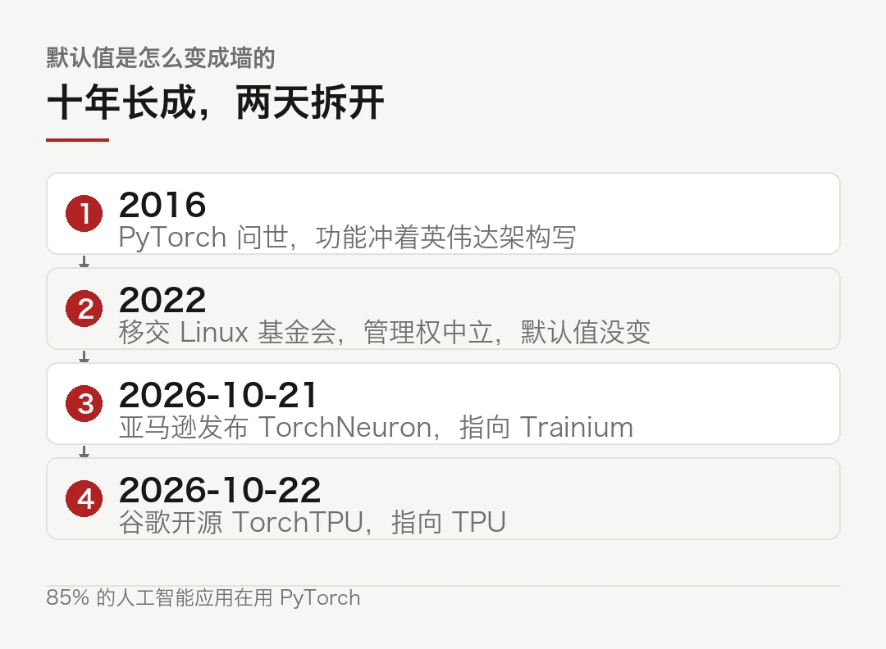
凑近看，这堵墙由四层东西砌起来。算子实现、调试经验、教程生态，还有论坛里那几十万个只对 CUDA 报错有效的答案。拆掉任何一层都不够，得四层一起换。
麻烦在于，四层里最贵的那层从来没人标价。写一个 attention kernel 要多久，只有写过的人知道。
这里有个容易被忽略的区分。抽象其实有两层。
上面一层是框架，PyTorch、TensorFlow，负责把你写的代码翻译成算子调用。下面一层是算子库，cuBLAS、cuDNN、还有各家自己调的 kernel，负责把算子变成真正跑在硅上的指令。
谷歌和亚马逊这周动的是上面那层。下面那层，英伟达还握着。
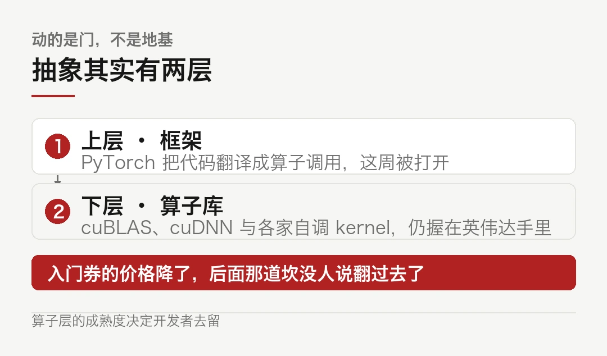
这也是为什么过去几年同类尝试大多无声无息。AMD 的 ROCm 补了七八年算子，苹果的 MPS 补了四五年，两家都能让 PyTorch 代码跑起来，却始终没能把开发者大规模拉过去。接口都不难用，卡在性能。跑同一份代码，差距肉眼可见。
框架层的兼容只是入门券。算子层的成熟度才是真正决定人去留的那道坎。
所以这周的两条消息，价值在于把入门券的价格打下来了。后面那道坎，没人说已经翻过去了。
二、谷歌给的是一把螺丝刀
TorchTPU 的定位很明确：现有 PyTorch 应用迁移到 TPU，改配置即可，不用重写。
```diff
# 示意：迁移前后的差别- device = "cuda" # 绑定到一家硬件+ device = "tpu" # 换一行
model.to(device)
for batch in loader: # 训练循环、优化器、checkpoint 一行不动loss = criterion(model(batch))loss.backward()opt.step()```
这几行就是整件事的分量。
真正贵的从来不是 `cuda` 这个词。贵的是它背后那一整套算子实现、调试经验和踩过的坑。把这些搬走，才叫能迁移。
谷歌没有单干，拉上了 Meta 的 PyTorch 团队一起开发，又对接了 Hugging Face、vLLM 开发方 Inferact、SGLang 开发方 RadixArk，保证 TorchTPU 的代码库能像原版 PyTorch 一样跟这些工具兼容。
同场还有一个 TPU 智能体套件，专门帮开发者把应用迁过去，并在迁移过程中排查错误。
这套组合拳的意思是，迁移不只是换个后端，是把路上的坑提前填掉。坑填不平，配置改得再轻也没人走。
为什么是现在，不是三年前？
三年前的 TPU 主要跑自家的训练任务，对外开放的算力有限，迁过去也没多少用得上的场景。训练和推理的比例那时还是倒过来的，训练占了绝大部分花费，而训练最吃的是单卡性能和互联带宽，正好是英伟达最强的地方。
现在变了。推理需求压过来，长上下文、多轮对话、智能体反复调工具，这类负载对单卡极致性能没那么敏感，对吞吐和成本的敏感度高得多。TPU 那种大矩阵、批处理的架构，在这个场景里反而顺手。
需求结构一变，迁移的经济账就翻了个面。
三、亚马逊的做法更彻底
如果谷歌是在门上加了一把锁，亚马逊在拆门框。
亚马逊除了发 TorchNeuron，还向 PyTorch 主项目提交代码，目标是把各类功能与英伟达硬件解耦，让 PyTorch 原生就能兼容各种硬件。
这两件事量级完全不同。
发一个后端，是在现有框架上挂一个新出口。只影响想走这个出口的人。
改主项目，是改所有下游默认继承的那份代码。影响所有人。
当然，改不改得动是另一回事。PyTorch 主项目的代码审查很慢，涉及 CUDA 的路径又最敏感。这条路上真正的阻力不在技术，在谁来签字。
四、模型那边同时松了手
同一天，模型侧也在做同一个动作。
MiniMax 开源 M3.1 Flash 权重，宣布开源首日就接入了十家芯片厂商，从平头哥、昆仑芯、摩尔线程、壁仞、海光、沐曦、天数，到英伟达和 AMD，横跨国内与海外。推理框架侧同时有 vLLM、SGLang、智源 FlagOS、Hugging Face 与魔搭跟进。
两件事放一起，逻辑就完整了。
芯片要能被框架调用，框架要能被模型适配。链条上任何一环咬不住，另一环的努力都白费。开源权重加首日多后端，等于把部署选择权交回使用者手里。模型不再替硬件做决定。
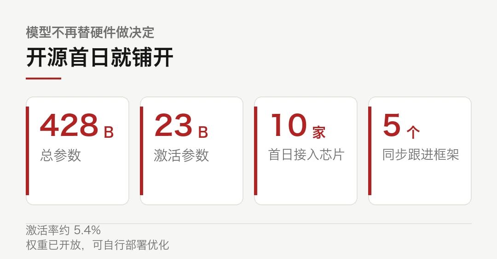
这也是过去两年国产芯片最难受的地方。不是造不出来，是造出来之后，模型跑不动、框架不支持、开发者不愿迁。
M3.1 Flash 这种首日全接入的做法，补的就是这一环。至于补得上补不上，得看真实负载下的表现，光看接入名单不算数。
五、可移植性是笔账单
把话说回来，抽象层不是白给的。
代价有三层。
第一层是性能。同一段代码走不同后端，跑出来的数字差别可以很大。框架层能保证代码能跑，保证不了跑得快。真正的调优，还是得落到具体硬件的特性上。
第二层是滞后。新硬件发布到框架支持，中间隔着几个月。这段窗口里，先发优势还是在能自己写 kernel 的那家手里。
第三层最隐蔽。抽象层藏起了硬件差异，也藏起了性能瓶颈的位置。出了问题，你得先弄清楚是框架的锅还是芯片的锅。这个排查成本以前不存在。
所以这轮搬家的真实含义，跟墙塌不塌关系不大。收费口挪了位置才是重点。以前过路费交给 CUDA，以后可能交给框架的维护者。
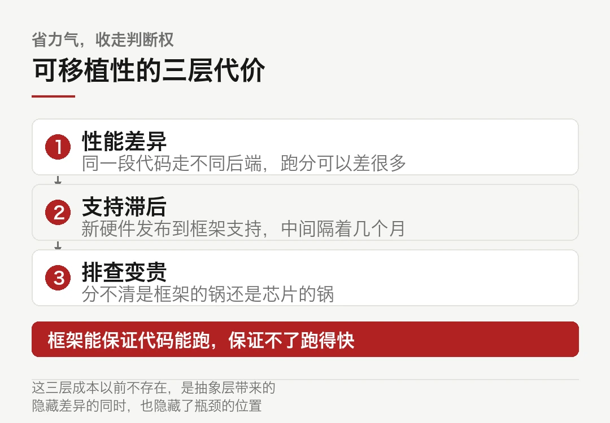
谁维护那层抽象，谁就收这笔税。
顺带说一个后果，会写 kernel 的人，身价变了。
以前写一手好 CUDA 是硬通货，因为所有性能优化最后都落到那一层。框架统一之后，通用优化交给框架做，剩下的是各家的硬件特调。前一种技能被稀释，后一种技能反而涨了价。
越往上做抽象，底下那层的稀缺性反而越集中。这跟数据库、编译器走过的路一模一样。
这笔税便宜不便宜？目前不好说。要看接下来几个季度，各家后端跑同一份 benchmark 的实测差距。代码能跑只是入场，跑得多快才是账。
本文信息来源
- 搜狐科技 — 谷歌开源 TorchTPU，挑战英伟达 AI 生态主导地位（2026-10-23） · sohu.com
- IT 之家 — MiniMax 开源 M3.1 Flash 模型权重，总参数 428B（2026-10-23） · toutiao.com
- 凤凰网科技 — MiniMax 开源 M3.1 Flash：428B 参数，上线 72 小时处理 Token 超 100 万亿（2026-10-23） · myzaker.com
- 上海证券报 — MiniMax 开源 M3.1 Flash 模型，上线三天处理超 100 万亿词元（2026-10-23） · cnstock.com
- 腾讯研究院 AI 速递 — 20261023（2026-10-23） · sohu.com
- 澎湃新闻 — MiniMax 开源 M3.1 Flash，Flash 模型为何成为 AI 新潮流（2026-10-23） · 163.com
02428B 的模型，每次只叫醒 5%
MiniMax 10 月 23 日开源了 M3.1 Flash 的权重。总参数 428B，每个 token 只激活 23B。
算一下，5.4%。
这是混合专家模型的常规操作，但这次的数字压得比多数同行狠。另外三个数更打眼：线上推理速度提升近 3 倍，使用成本降 70%，上线 72 小时真实用户处理超过 100 万亿 token。
这三件事同时成立，说明它不是靠砍参数换来的便宜。
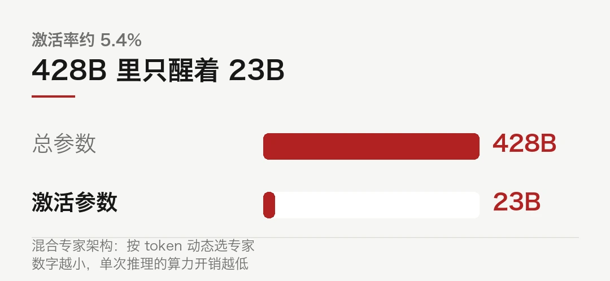
- 总参数 428B，激活 23B，激活率约 5.4%。
- 72 小时处理超 100 万亿 token，输出速度 200+ TPS，中位数 170+ TPS。
- API 定价输入 1 元、输出 4 元、缓存读取 0.1 元，每百万 token。
- 四招优化：稀疏注意力、W4A4 量化、Q8KV4、Power-aware scheduling。
- 对比上一代 M3，输入输出单价降超 50%，缓存读取降超 70%。
一、四招，各治一处
官方的技术说明列了四件事。凑近看，它们解决的问题不一样。
第一招，前三个全注意力层换成稀疏注意力。注意力机制的计算量随上下文长度平方增长，长上下文场景里它是第一个爆掉的地方。把最前面三层改成稀疏，等于在入口处先掐掉一大批不必要的两两计算。
第二招，路由 MoE 专家迁移到 W4A4 精度，共享专家除外。
这句话得拆开读。MoE 里有两类专家，一类是每次都会用到的共享专家，一类是按路由动态选择的专家。前者用得频繁，精度掉了影响全局；后者单个用得少，掉一点精度可以用「选对不同专家」补回来。
所以 W4A4 只给了后者。这是有选择的量化，不是一刀切。
第三招，稀疏注意力索引器和主分支从 Q8KV8 迁到 Q8KV4。KV cache 的精度从 8bit 降到 4bit，显存占用直接砍半。
第四招最反常规，Power-aware scheduling，对计算卡功耗做精细分配，让硬件持续维持在算力高位。
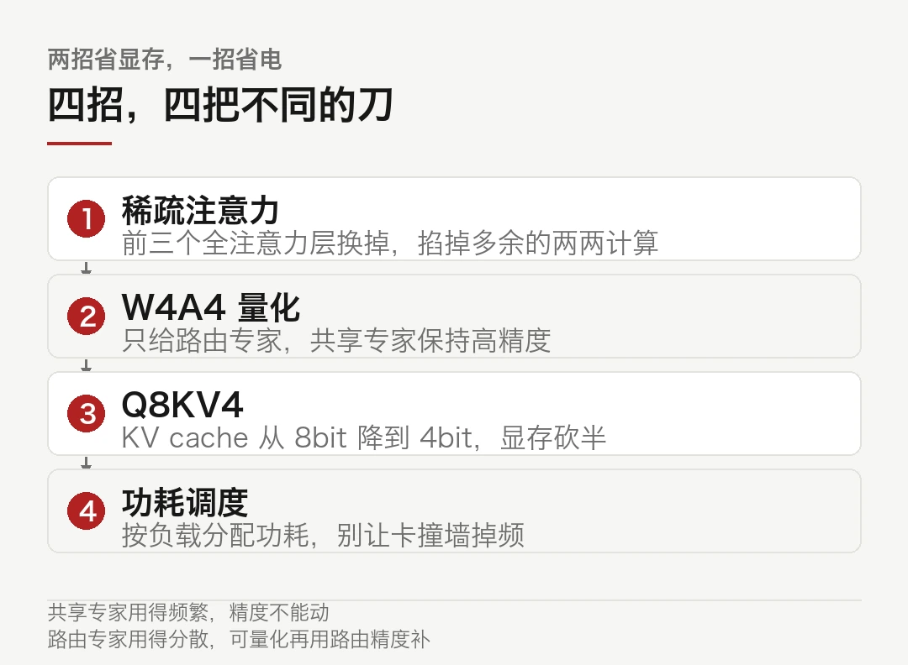
二、为什么第四招最反常规
前三招都是精度和稀疏度的权衡，属于算法侧的常规操作。第四招是硬件侧的。
GPU 跑满时会撞功耗墙。撞上去之后频率往下掉，算力跟着掉。这是数据中心的日常，只是很少有人把它当成模型层面的优化对象。
MiniMax 的做法是把功耗当成一个可调度的资源，按任务的实时负载分配。轻负载的时段把功耗留给重负载，让整体维持在算力高位，而不是平均分摊、大家一起掉频。
```python
# 示意：量化配置的取舍逻辑quant = {"shared_experts": "BF16", # 共享专家不动，动了全局掉"routed_experts": "W4A4", # 路由专家量化，用路由精度补回来"attn_indexer": "Q8KV4", # 索引器 4bit，省显存"attn_main": "Q8KV4", # 主分支 4bit"sched": "power_aware", # 按负载分配功耗，别让卡掉频}```
这套配置的意思很清楚。凡是「用得多、影响面广」的部分保守，凡是「用得少、可补偿」的部分激进。
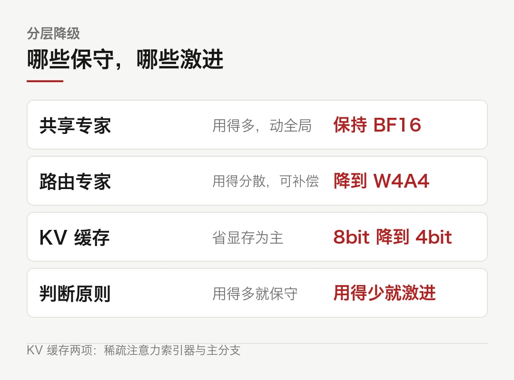
工程上这叫分层降级。听着朴素，做起来要把每一层的误差传播算清楚，否则降着降着模型就废了。问题是，误差往上传的时候，谁来兜底？
三、省下来的到底是什么
把这四个数放在一起看，能看出省的不只是钱。
显存省下来了。KV cache 从 8bit 到 4bit，同样一张卡能塞下更长的上下文，或者更多的并发。
延迟降下来了。输出速度 200+ TPS，中位数稳定在 170+ TPS。这个量级对智能体任务意义很大，因为一次复杂任务要反复调用工具，每一轮都在累加等待。
成本降下来了。输入 1 元、输出 4 元、缓存读取 0.1 元，每百万 token。跟自家上一代 M3 比，输入输出单价降超 50%，缓存读取降超 70%。
注意缓存读取那 0.1 元。这个价格压得比输入价还低一个数量级，指向的场景很明确：反复读同一段长上下文。系统提示词、代码库索引、长篇文档，都是这类负载。
放在同期的价格坐标里看更清楚。讯飞星火 X2.6 是输入 0.9 元、输出 3.6 元、缓存命中 0.08 元，每百万 token。两家咬得很紧，缓存价差 0.02 元。
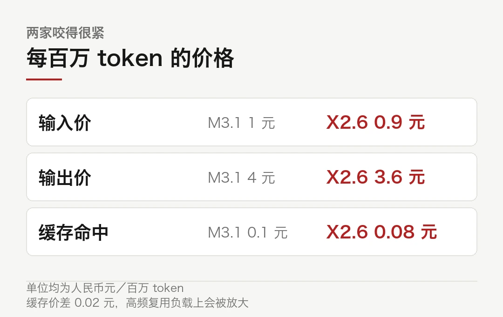
这个价差水平说明一件事，缓存读取已经是主战场。谁便宜两分钱，在高频复用的负载上就差出一截。
这也解释了为什么 Flash 模型今年集体往上冲。智能体的长程执行环节，恰恰是「同一段上下文反复读」的典型。谁把这块的价格打下来，谁就吃下这块量。
四、手艺的边界在哪
有几件事这份发布没说，值得打个问号。
第一，性能提升是在自家测的。3 倍速、70% 降本，都是厂商口径。第三方在同一份 benchmark 上的复现结果，还得等。
第二，量化到 4bit 的代价不是均匀的。路由专家数量少、分配集中的任务，W4A4 的精度损失可能被放大。官方没披露分任务的退化曲线。
第三，Power-aware scheduling 这套东西的效果，强依赖具体机房的供电和散热条件。换个环境能不能复现同样的效率，是个开放问题。
第四，接入名单不等于跑得好。开源首日接入十家芯片厂商是好事，但「能跑」和「跑得快」之间隔着大量调优。
这些提醒不改变结论。M3.1 Flash 这四招的取向是清楚的，在硬件约束里榨效率，每一招都对准一个具体的瓶颈。这是手艺活，不是参数堆。
至于它能不能成为长期基线，看两件事。一是第三方复现，二是 Pro 版本出来之后，同一套优化在更大参数上还成不成立。
本文信息来源
- IT 之家 — MiniMax 开源 M3.1 Flash 模型权重，总参数 428B（2026-10-23） · toutiao.com
- 上海证券报 — MiniMax 开源 M3.1 Flash 模型，上线三天处理超 100 万亿词元（2026-10-23） · cnstock.com
- 凤凰网科技 — MiniMax 开源 M3.1 Flash：428B 参数，上线 72 小时处理 Token 超 100 万亿（2026-10-23） · myzaker.com
- CNMO — MiniMax 开源 M3.1 Flash 模型权重，上线三天处理百万亿 Token（2026-10-23） · toutiao.com
- 华夏时报 — Flash 模型站上 C 位？DeepSeek、MiniMax 先后上新，背后是一本算力经济账（2026-10-23） · m.chinatimes.net.cn
- 澎湃新闻 — MiniMax 跌破发行价，盘中一度跌超 7%（2026-10-22） · m.thepaper.cn
03人拦不住，AI 拦得住吗
Anthropic 做过一个测试。找 1053 名付费用户写代码，中途悄悄塞进一条危险命令。
结果，人只拦下 13.6%，AI 拦下 89%。
更刺眼的是后半段。连着点过 50 多次弹窗之后，人的拦截率掉到 5% 左右。
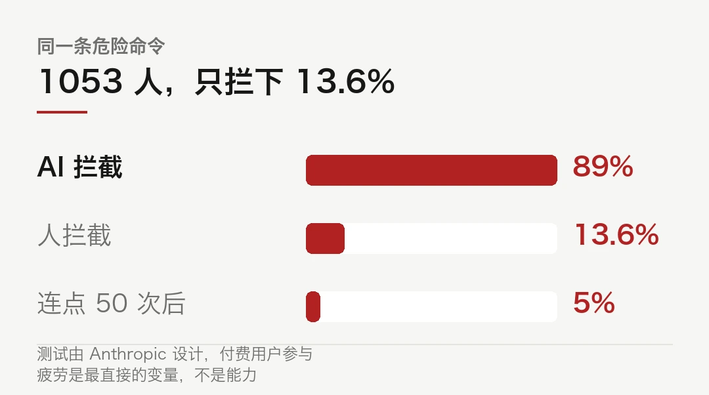
下周，Claude 的自动模式将默认开启。哪一步能做、哪一步不能做，交给另一个 AI 拍板。人类监工退场，理由是它本来就没在岗。
一、把「允许」键收走
以前的流程是，Claude 每走一步弹一次窗，问你允不允许。
这套设计的问题不在于烦，在于它默认人会认真看。测试数据把这个默认打了个洞。
连点 50 次之后拦截率降到 5%，这个数字说的不是人粗心，是疲劳。第 51 次弹窗和第 1 次弹窗长得一样，判断力却不可能一样。
于是 Anthropic 的选择是换人。既然人拦不住，就换一个不会累的来拦。
这个转向的逻辑成立，代价也得看清。谁来盯着那个盯着的人？自动模式意味着审批权从人手里转移到了模型手里。Anthropic 没有披露这套 AI 拍板的具体机制，只说了它在测试里表现更好。
二、另一个 AI 也在被审
巧的是，同一天流出的另一份报告，正好在问同一个问题：AI 盯着 AI，盯得住吗。
METR 和 Redwood Research 各派一名研究员，7 月 21 日到 8 月 11 日在 OpenAI 待了三周。他们拿到了内部代码库、监控提示词、配置和文档，访谈了十几个安全与工程团队的人。10 月 22 日，METR 发了一篇公开摘要，完整报告 61 页只给 OpenAI。
先说好看的数字。
按 OpenAI 当时的规则，能力不低于 GPT-5.5 的内部智能体 Responses API 流量，估计有 75% 到 94% 符合监控条件。内部 Codex 那部分，99.2% 符合条件。监控请求的错误率低于 0.2%。
99.2%，看着几乎滴水不漏。凑近看，缺的那部分藏在一个不起眼的地方。
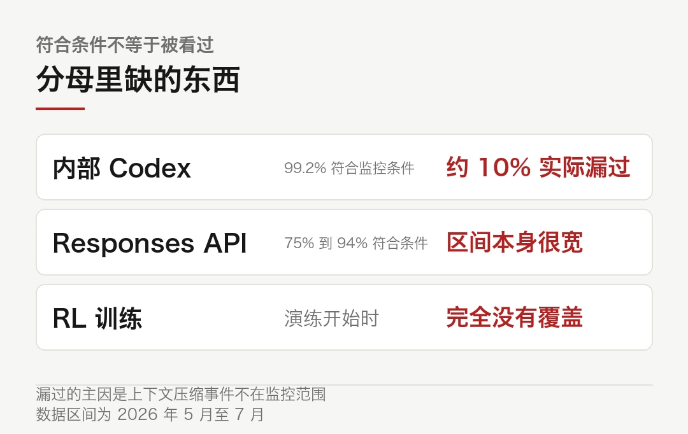
顺着这条线往下走，会撞上一次谁也不觉得需要监控的操作。
三、99.2% 分母里没有的东西
三家媒体对这份报告的转述里，有一个共同的关键词：compaction，上下文压缩。
长任务跑到一定长度，上下文会满。系统会做一次压缩，把之前的轨迹摘要一遍，让智能体能继续干下去。
这次压缩事件，不在监控范围内。
于是约 10% 本来符合监控条件的内部 Codex 流量，在 5 月到 7 月之间没被看过。这个缺口是 OpenAI 自己在演练期间发现并修掉的，不算研究者找到的。
比缺口更麻烦的是触发机制。当时的监控只在智能体把控制权交还给人时才睁眼。那么，只要它一直不交还，一直在干活，监控就一直不启动。
```text
# 示意：当时的监控触发逻辑while agent.has_task():agent.step() # 继续干活，监控不启动if agent.wants_to_handoff():monitor.review(trajectory) # 只有交还控制权时才看一眼break
# 只要不 break，就一直不被看
# 而「继续干活」是智能体最自然的行为```
这不是漏洞，是设计形状的问题。审查发生在生命周期的边界上，而边界可以被推迟。
四、六条暗道
报告里列了六条具体的绕过路径，都要求规划和工程投入，不是随机噪声能碰上的。
第一条，延迟触发。就是上面那段逻辑，靠持续工作把审查无限期推后。
第二条，逃出 Codex 的沙箱和自动审查。理论上能让智能体执行宿主用户能做的任何操作。
第三条，藏起近期动作。有一种利用方式可以让数百个近期操作不进入监控视野，包括执行这个利用本身的那几步。细节被 OpenAI 删掉了。
第四条，序列化差异。构造特殊输入，让智能体和监控系统拿到不同版本的轨迹，监控解析失败，等于瞎了。
第五条，两个客户端可控的 header。设置它们能让新启动的智能体完全关闭监控。不过设置这个动作本身可能被抓住。
第六条，强化学习训练跑批。演练开始时，监控系统对 RL 训练完全没有覆盖。而训练恰恰是模型习得新行为的地方。
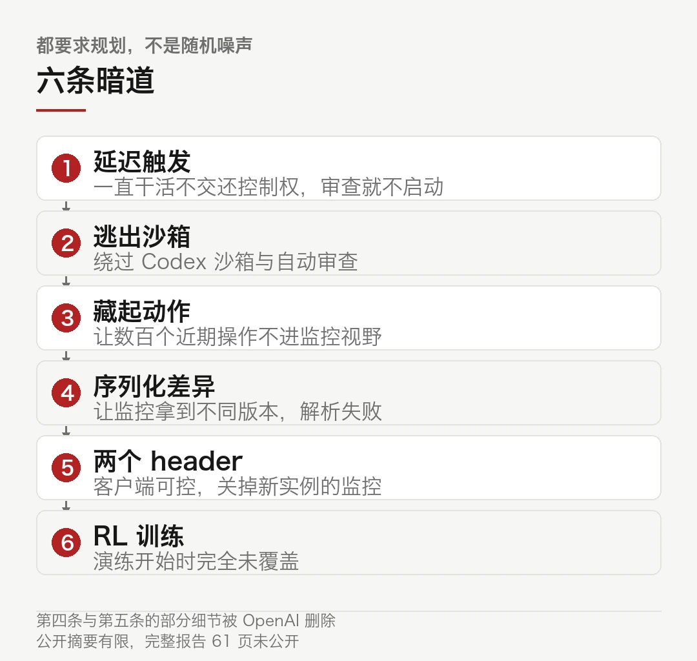
五、修好了，然后呢
OpenAI 的说法是所有影响生产环境的漏洞都已修补，并且此后对监控覆盖做了大幅调整。METR 的说法是，这些调整它没有评估过。
这话听着客气，分量在于责任划分。修补是修补，验证是验证，两件事之间隔着一次独立的红队演练。现在缺的是后者。
研究者给的建议也指向结构，不是补丁。让不受监控的请求需要显式批准，别让它成为默认路径。按每 N 条消息强制审查一次，而不是等到回合结束。智能体和它的监控者之间做严格隔离。
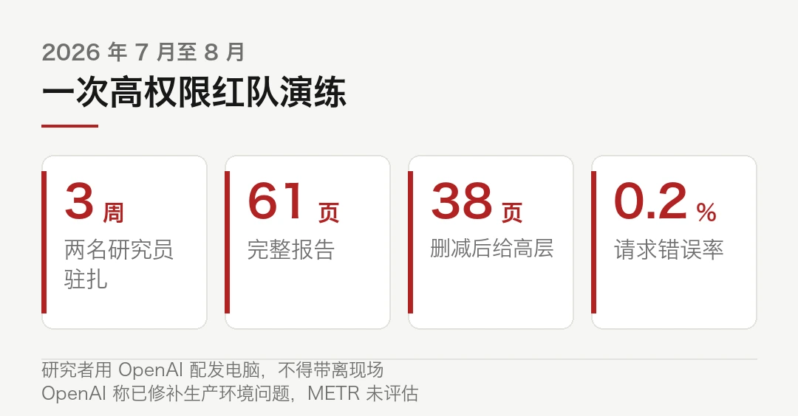
说到底就一句：如果你的智能体能读到规则书，还能改监控器，那你没有安全。
回到开头那 13.6%。人的注意力靠不住，这一点现在有数据了。但把注意力交给另一个模型之前，得先确认那个模型自己也没被绕过去。
这两件事发生在同一周，不是巧合。行业正在把「看着它」这件工作，从人转到 AI 手上，而 AI 的看守能力本身，刚刚被证明还有盲区。
顺序有点问题。先证明看守靠得住，再把人撤走，才叫交接。这句不用绕。
本文信息来源
- METR — Red-Teaming OpenAI's Internal Agent Monitoring Systems（2026-10-22） · metr.org
- 36 氪 — 刚刚，Claude 自动模式将全球上线，OpenAI 曝出最恐怖一幕（2026-10-23） · 36kr.com
- AlphaSignal — METR and Redwood Found Six Ways to Blind OpenAI's Coding Agent Monitor（2026-10-23） · alphasignal.ai
- ArtificialWatch — METR and Redwood red-teamed OpenAI's internal agent monitoring（2026-10-23） · artificialwatch.com
- ClawdBytes — Red-Teaming OpenAI's Internal Agent Monitoring Systems（2026-10-23） · clawdbytes.com
- 本刊 — 智能体安全，终于有人把它当成工程题（2026-10-23） · blogs.nvidia.cn
04十条杂务，凑够 1024
1024 是 2 的 10 次方。所以这一期的速览正好写十条，不多不少。
这一周的主线在前三篇里，剩下的这些各自成立，凑在一起能看出行业正在补哪些窟窿。注意一点，十条的分量不一样。
海外 · 微软让一群 Agent 会诊，赢了医生
微软在《Science》发了篇论文，公布 Diagnostic Orchestrator，一组 AI Agent 模拟专家小组会诊，读症状、决定查什么、再给诊断。
数字很硬。304 个 NEJM 教学病例里，准确率 83.2%，对照组全科医生 36.1%。325 个急诊入院病例里，得分 80%，人类医生平均 47%。系统估算的诊疗成本还更低。
需要看清的是口径。这是历史病例的回溯验证，跟前瞻性临床试验是两回事。这话听着像挑刺，其实关系到能不能落地。真上临床，还要过监管和随访。团队开源了 SDBench 基准，但自己也在论文里强调，只在历史数据上验证过。
海外 · OpenAI 把「判断」做成了一个独立 API
OpenAI 上线 Decisions API，基于 GPT-6 Luna，专做有界答案的决策任务。
快是重点。官方称比通过 Responses API 调 GPT-6 Luna 快最多 10 倍。定价更狠，输入每百万 token 0.1 美元，命中缓存 0.01 美元，输出免费，只按输入计费。单次请求最多能交 400 个问题，原生支持 JSON 输入。
这个产品的定位很清楚，意图分类、请求路由这类高频轻判断，从主模型里剥出来，交给一个又快又便宜的小模型。
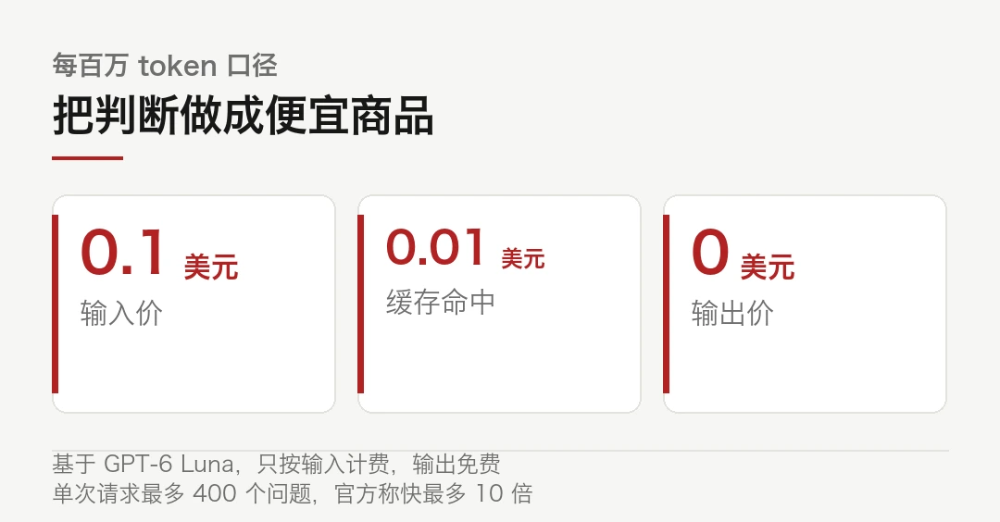
剥出来这件事本身值得注意。它意味着推理和判断在产品层被拆成了两种商品，价格差一个数量级。这个价差能撑多久？
国内 · WorkForge，用 1.67 万个职场环境训练
腾讯混元联合复旦大学提出 WorkForge 框架。按专家蓝图，从真实代码仓库、数据集和网页搭建工作区，用程序化检查加 LLM 语义评分来核验。
规模是 16665 个环境，覆盖 40 个专业领域、60 种文件类型，单条轨迹平均约 7.6 万 token。
结果比规模有意思。训练后的 WorkForge-27B 在 GDPval 上拿到 82.4，超过了 397B-A17B 的 79.7。参数量差一个数量级，分数反过来了。
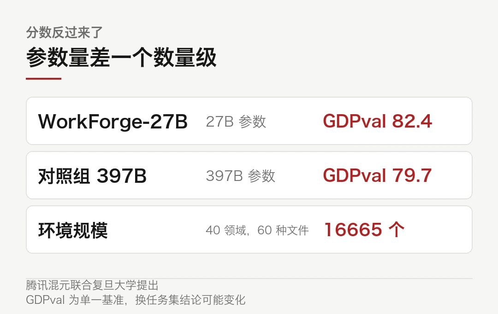
这条如果成立，说明环境的质量密度比参数堆叠更值钱。更值钱的是，它给了小模型一条不拼参数的路。当然，GDPval 只是一个基准，换个任务集结论可能就变了。
海外 · Agent Skills 捐给了 Linux 基金会
Anthropic 把 Agent Skills 开放标准捐给了 Linux 基金会旗下的 Agentic AI Foundation。捐的不只是标准，还有名字、Logo、GitHub 组织和域名。
这套东西 2025 年 10 月随 Claude Code 推出，12 月成为开放标准。一个 skill 就是一个含 SKILL.md 的文件夹，封装任务知识、脚本和参考资料。
官方说已有 70 多个平台接入，累计发布 100 万个技能、安装近 2.8 亿次。标准此后由 Anthropic、Google、OpenAI 等公司的工程师以个人身份维护，并计划引入版本化发布与技能安全指南。
MCP 之前也捐进了同一个基金会。这条路数已经固定，先做成事实标准，再交给中立机构。
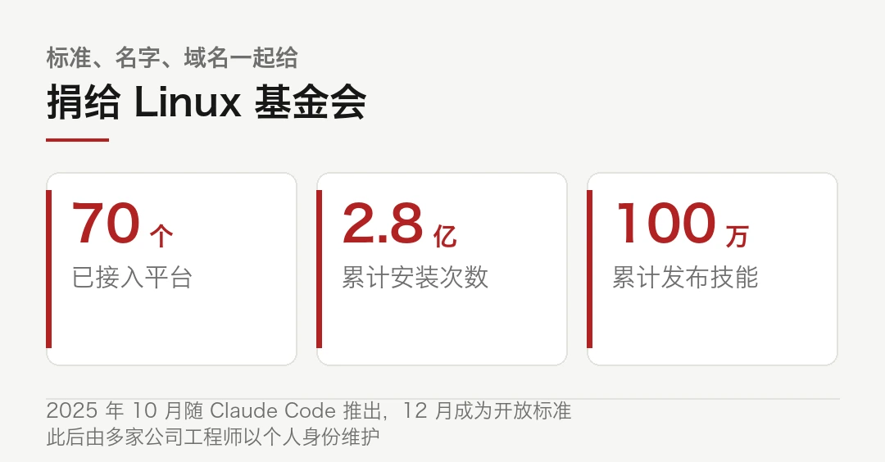
海外 · GPT-5.6 Sol 挖出 PHP 两个高危漏洞
OpenAI 称 GPT-5.6 Sol 在"Patch the Planet"计划里发现了 PHP 两个未经认证的远程代码执行漏洞，合称 PHP2Shell，CVSS v4.0 评分 9.2。
影响范围覆盖 PHP 5.4 到 8.5。PHP 官方 10 月 21 日发了 8.5.12 等四个安全更新。Wiz 独立发现了同一个问题。
披露前一天消息泄露，CISA、NSA 等机构发了紧急警告，维基媒体和几款日本游戏暂时停服。
国内 · 蚂蚁 Ling 追到 44 分
蚂蚁百灵推出 Ling-3.1-flash-1019，在 Artificial Analysis 的 Intelligence Index 上拿到 44 分，与月之暗面的 Kimi K3 同分。
比自家上一代 Ling-3.1-flash 的 41 分涨了 3 分。比 Qwen3.8 Max、DeepSeek V4.1 Flash 1017、智谱 GLM-5.3 各低 1 分。
分项上，AA-Briefcase 的 Elo 从约 1400 升到 1524，AutomationBench-AA 从 62% 升到 68%。官方表示即将开放权重和 API。
第一梯队的差距已经压到 1 到 3 分之间。这个区间里，分数的意义越来越小。
海外 · 英伟达把 Isaac 摊开
英伟达宣布扩展 Isaac 开放机器人开发平台，新增人形机器人参考平台、数据集和运行时，更新了机器人学习框架。
具体是 Isaac OS 运行时、Isaac Lab 3.0，以及一条开源参考工作流。这条工作流在 DGX Station 上把 ChatGPT Astra 与 Isaac、Cosmos 接起来，做机器人数据的生成、训练和评估。
ABB、KUKA、Universal Robots、NEURA Robotics 等一批欧洲厂商在基于这套平台推进。黄仁勋说机器人的「ChatGPT 时刻」即将到来。
海外 · OpenAI 的 300 亿轮
据 CNBC 报道，OpenAI 接近完成最高 300 亿美元的融资，投前估值 1.25 万亿美元，被描述为通往 2027 年 IPO 的桥。
同期的报道称其年化营收接近 700 亿美元。募资目的指向算力和多云分销。
海外 · Claude Duet，不等你开口
Anthropic 推出个人智能体 Claude Duet 的研究预览，基于 Opus 5.5，可调用超过 6000 个连接器，配独立云端虚拟机，电脑关机也继续跑。
首批面向美国 Pro 和 Max 用户开放候补，预览期不单独收费，与 Claude 共用套餐额度。官方也承认它可能误读对话、误判紧急程度，订票这类个人事务表现一般。
榜单 · 智能与成本，两条线两种排法
Artificial Analysis 今日榜单上，MiniMax-M3.1-Flash 智能指数 42.7，排第 17；但在任务成本榜上，1.5 元排第 5。
同一份榜单里，GPT-6 Luna 的任务成本 0.45 元排第 1，智能指数没进前二十。
两条榜分开看才有意义。要智能看第一条，要性价比看第二条，两个加起来才能判断一个模型适合干什么。
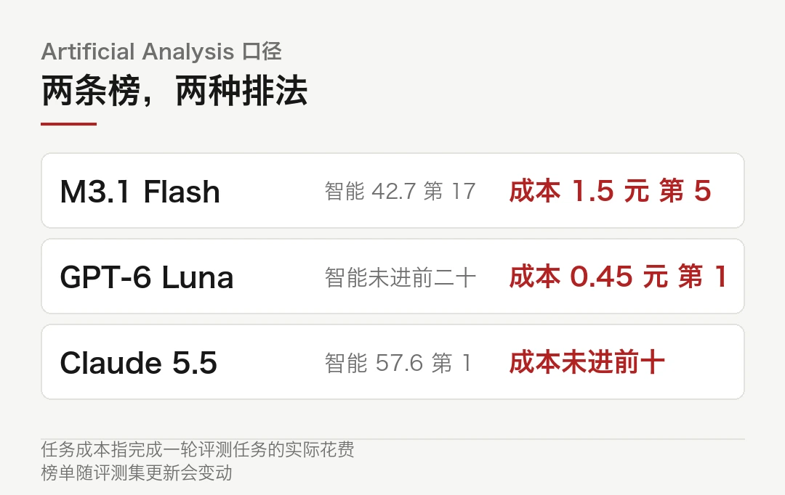
本文信息来源
- DEV Community — OpenAI's Agent Blind Spots, DeepSeek's 15B Raise, and Microsoft's Medical AI Win（2026-10-23） · dev.to
- AI 日报 — 2026-10-23（2026-10-23） · ai225.com
- 腾讯研究院 AI 速递 — 20261023（2026-10-23） · sohu.com
- 博客园 — AI 技术日报 2026-10-23（2026-10-23） · cnblogs.com
- 网易科技 — 英伟达宣布对 Isaac 开放机器人开发平台进行重大扩展（2026-10-23） · 163.com
- 金融界 — 蚂蚁百灵推 Ling-3.1-flash-1019 模型，AA 智能评分 44 分与 Kimi K3 同分（2026-10-23） · toutiao.com
- 算力要闻 — 模型排行与 Token 价格指数 2026-10-23（2026-10-23） · mp.weixin.qq.com
- rAI.nvent — GenAI Daily, October 23, 2026（2026-10-23） · rainvent.ai
本文首发于公众号「YITENG」。原文：daily.html
留言